| Casa | Nome | Descrição |
|---|---|---|
| 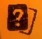 | Carta aleatória | São oferecidas 3 cartas comuns, você pode escolher apenas uma delas. A mesma ficará permanentemente no seu inventário |
| 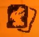 | Carta por tribo | São oferecidas cartas de 3 tribos aleatórias, selecionando uma, aparecem 3 cartas desse tipo. Você pode escolher apenas uma delas, a mesma ficará permanentemente no seu inventário |
| 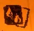 | Carta por custo | São oferecidas 3 dos 4 tipos possíveis de custo: 1 sangue, 2 ou 3, e osso x". Escolhendo um deles, 3 cartas desse tipo ficam à escolha, apenas uma fica no seu inventário |
| 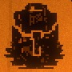 | Item | São oferecidos 3 itens 3 vezes, podendo escolher apenas um. Caso esteja sem espaço, você receberá uma carta rara, o Rato de Mochila |
| 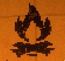 | Fogueira | Um breve descanso para uma de suas criaturas, podendo conceder +1 de dano ou +2 de vida a cada ativação. Tenha cautela! |
| 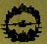 | Vendedor de peles | Aqui você pode adquirir peles de lebre, lobo e peles douradas, cada uma por um preço, dependendo de qual parte do jogo você se encontra |
| 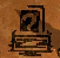 | Compradora de peles | Aqui encontra-se uma comerciante em busca de peles, você pode trocar as suas por cartas, sendo normais, com selos extras, ou até mesmo raras |
| 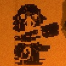 | Totem | Escolha uma entre 3 partes de totem, tendo um corpo (que representa um selo) e uma cabeça (que representa uma tribo), você atribui o selo à todas as cartas dessa tribo |
| 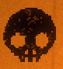 | Duelo | Confronto simples, sem enrolação. Abra uma vantagem de 5 pontos de dano para vencer |
| 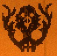 | Duelo com totem | Confronto no qual o oponente tem um totem aleatório formado, e um baralho voltado ao mesmo. Abra uma vantagem de 5 pontos de dano para vencer |
| 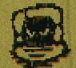 | Caverna | Buscando desafios? Aqui você escolhe uma condição pré-suposta, e são reveladas 3 cartas do seu baralho, caso elas cumpram o requisito, sua recompensa será uma carta aleatória com selos extras. Caso contrário, nada acontece |
| 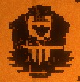 | Sacrifício | Uma criatura que você deseja sacrificar transferirá todos seus selos para uma carta da sua escolha |
| 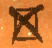 | Oferenda | Mate e remova permanentemente uma criatura de seu baralho. Em troca, começará sempre com alguns ossos que podem ser usados a qualquer momento |
| 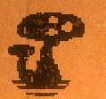 | Micologista | Cartas duplicadas? Chegou ao lugar certo. Os micologistas são capazes de fundir duas cartas iguas, somando todos seus atributos. Caso não haja cartas repetidas em seu baralho, você receberá mais uma que já está em sua posse, possibilitando a fundição num próximo encontro |